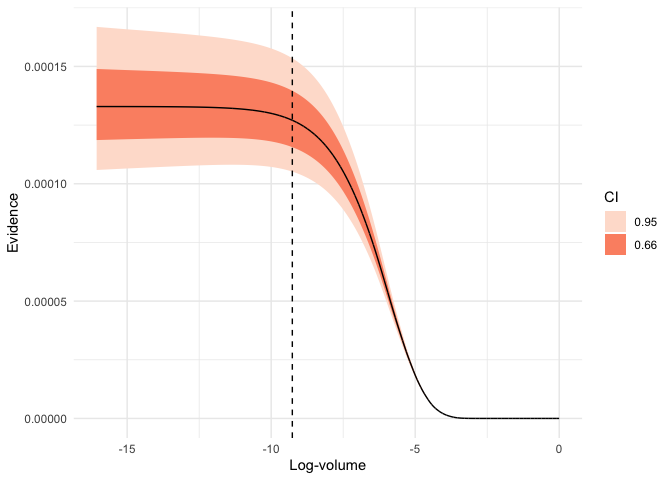
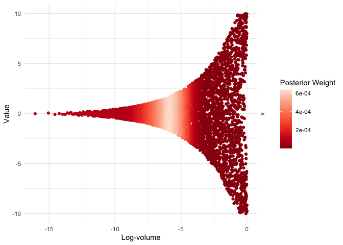

ernest is a comprehensive toolkit for nested sampling (NS), an algorithm for estimating a statistical model’s Bayesian evidence and posterior distribution. It provides S3 objects and methods that make nested sampling accessible, flexible, and robust within the R environment.
Installation
Install the development version of ernest from GitHub with:
# install.packages("devtools")
devtools::install_github("kylesnap/ernest")You’ll also need a working C++ compiler. To get it:
On Windows, install Rtools.
On Mac, install Xcode from the app store.
On Linux,
sudo apt-get install r-base-devor similar.
Why use ernest?
Often, statisticians are faced with multiple competing models that intend to describe or estimate a given data set. One way to compare these models against each other is by evaluating model evidence (also called marginal likelihood), found by integrating a model’s likelihood function across all possible values of its parameters. In Bayesian inference, evidence represents the parameter-independent probability of the data occurring under a given model—calculating and comparing evidence values across different models, such as through using Bayes factors, plays an important role in Bayesian inference.
Calculating evidence directly is challenging, as it requires evaluating a high-dimensional integral over the parameter space. Nested sampling estimates this integral by dividing the space into a series of small volumes. It starts by drawing points from the prior and ranking them by likelihood. The least likely points are discarded and replaced with new samples from more restricted likelihood regions, gradually compressing the search space. Each round of discarding shrinks the explored volume in a predictable way, helping to approximate the integral.
This approach to estimating evidence offers several advantages over methods like Markov chain Monte Carlo (MCMC):
- Robustness: NS handles complex likelihood surfaces that would otherwise be difficult to traverse, such as those with multiple modes or discontinuities.
- Posterior inference: After a run, discarded samples can be weighted to approximate the model’s posterior distribution.
- Natural stopping criterion: NS can estimate the amount of evidence left within the unexplored prior volume, and can stop sampling once this amount gets trivially small.
- Tractable uncertainty estimates: The shrinkage at each iteration follows a uniform order statistic, so uncertainty can be simulated using the results from a single run.
ernest’s implementation of NS offers R users several benefits:
- Native R implementation: John Skilling’s NS algorithm is implemented in R, with no Python or Fortran dependencies. (C++ is used to implement the included likelihood samplers to improve run-time efficiency).
- Type- and size-safety: ernest helps ensure that the user provides likelihood functions and prior specifications meet the requirements of the NS algorithm.
-
Familiar methods: Sampler specifications and results are stored in S3 objects. Start or continue an NS run with
generate(), review results withsummary(), and simulate estimation error withcalculate(). - Powerful visualizations: Plot evidence estimates and analyse posterior distributions using ggplot2 and posterior.
Example
library(ernest)
# Define a prior (i.i.d. multivariate uniform)
prior <- create_uniform_prior(names = c("x", "y", "z"), lower = -10, upper = 10)
# Define a log-likelihood function (multivariate normal)
log_lik_mvn <- function(theta) {
n_dim <- 3
sigma <- diag(0.95, nrow = 3) # Covariance matrix
det_sigma <- log(det(sigma))
prec <- solve(sigma) # Precision matrix (Sigma^-1)
log_norm <- -0.5 * (log(2 * pi) * n_dim + det_sigma) # Normalization for MVG
drop(-0.5 * crossprod(theta, crossprod(prec, theta)) + log_norm)
}
# Set up and run the sampler
sampler <- ernest_sampler(
log_lik_mvn,
prior = prior,
nlive = 500
)
run <- generate(sampler, show_progress = FALSE)
# Summarize and visualize results
summary(run)
#> Summary of nested sampling run:
#> ── Run Information ─────────────────────────────────────────────────────────────
#> * No. points: 500
#> * Iterations: 4633
#> * Likelihood evals.: 101352
#> * Log-evidence: -8.9259 (± 0.1137)
#> * Information: 4.732
#> ── Posterior Summary ───────────────────────────────────────────────────────────
#> # A tibble: 3 × 6
#> variable mean sd median q15 q85
#> <chr> <dbl> <dbl> <dbl> <dbl> <dbl>
#> 1 x -0.0472 2.80 0.00714 -2.03 1.85
#> 2 y -0.000385 2.81 -0.00925 -1.89 1.87
#> 3 z -0.111 2.75 -0.0345 -2.01 1.78
#> ── Maximum Likelihood Estimate (MLE) ───────────────────────────────────────────
#> * Log-likelihood: -2.6811
#> * Original parameters: -0.0116, -0.0448, and -0.0105
plot(run, which = "evidence")
visualize(run, x, .which = "trace")
For advanced usage, including custom priors and hierarchical models, see the package vignettes.
Prior Work
NS has been implemented in many languages. This non-exhaustive list of popular NS implementations is adapted from Fowlie (2021):
(* Indicates software that includes an R interface.)
ernest’s design, API, and NS implementation are based on the nestle package, with further inspiration from dynesty.
The nestcheck Python package provides routines for error estimation and diagnostic plotting with nested sampling runs. Several of ernest’s methods are based on this work.
Citing ernest
When using ernest, please at least include the following citations:
Dewsnap K. (2025). “ernest: A Toolkit for Nested Sampling.” R package version XXX, <URL: (https://kylesnap.github.io/ernest/)>
Skilling, J. (2006). Nested Sampling for General Bayesian Computation. Bayesian Analysis, 1(4), 833–859. <DOI: https://doi.org/10.1214/06-BA127>
Buchner, J. (2023). Nested Sampling Methods. Statistics Surveys, 17, 169–215. <DOI: https://doi.org/10.1214/23-SS144>
Additional citations for ernest can be found in the package’s vignettes and within function documentation.